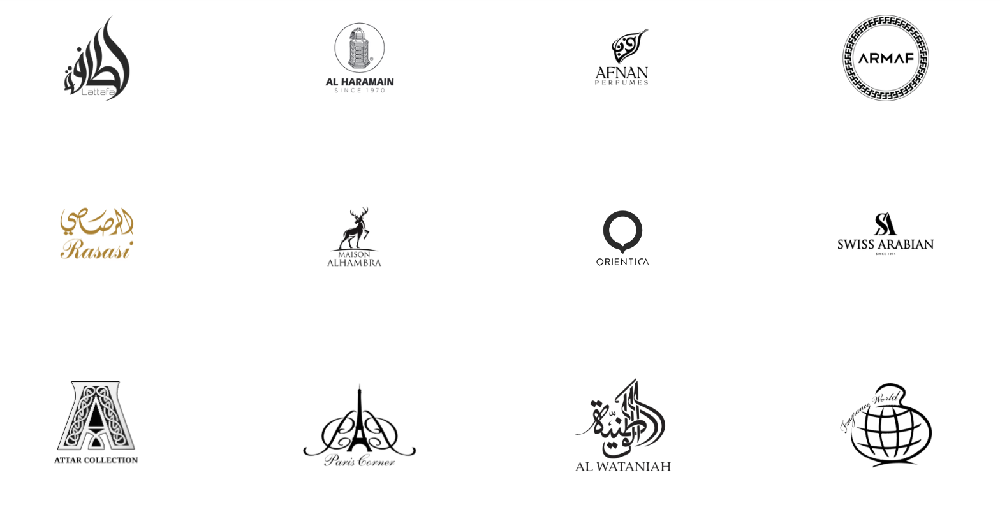
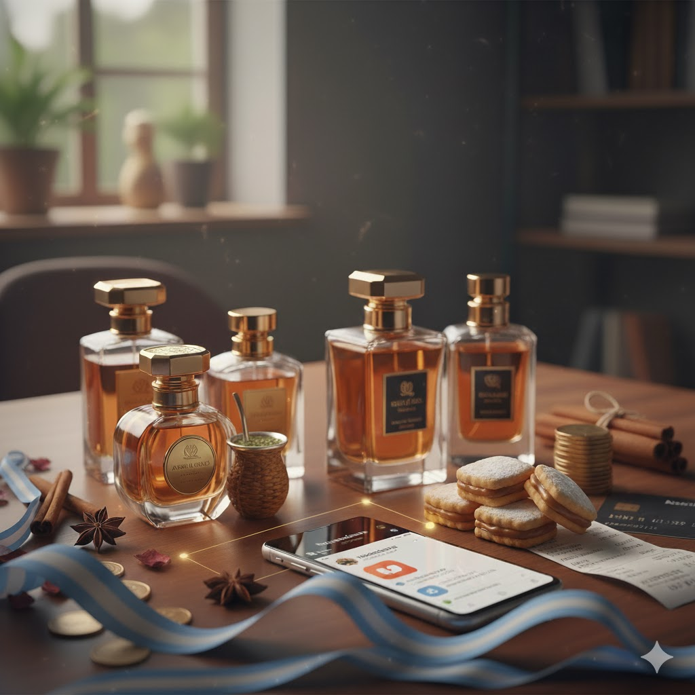

El origen milenario de los perfumes árabes

Publicado por Mauro Viotto — Octubre 2025
Los perfumes árabes tienen una tradición que se remonta a miles de años. En civilizaciones antiguas como Mesopotamia, Persia y Arabia, estas fragancias desempeñaban un papel esencial en rituales, intercambios comerciales y ceremonias religiosas.
Su elaboración se basaba en ingredientes exóticos como el oud, el ámbar gris, el almizcle y diversas resinas aromáticas. Hoy, esta herencia se combina con técnicas modernas, creando perfumes únicos y profundamente sensoriales.
El boom de los perfumes árabes en TikTok

Publicado por Mauro Viotto — Octubre 2025
TikTok transformó la forma en que los jóvenes descubren fragancias. Cientos de usuarios comenzaron a mostrar sus colecciones, explicar notas olfativas y comparar perfumes árabes con los de diseñador.
Este fenómeno impulsó ventas globales y posicionó a las marcas árabes como una opción de alta duración, gran proyección y un precio accesible.
Marcas y modelos más reconocidos

Publicado por Mauro Viotto — Octubre 2025
Lattafa se volvió un ícono gracias a fragancias como “Raghba” y “Asad”, conocidas por su intensidad y duración. Ajmal, por su lado, destaca por sus combinaciones más elegantes, mientras que Arabian Oud ofrece perfumes premium basados en oud natural.
En redes sociales, muchos de estos modelos son comparados con perfumes nicho y de diseñador, atrayendo a quienes buscan calidad sin pagar precios exorbitantes.
Guía para elegir tu perfume árabe ideal

Publicado por Mauro Viotto — Octubre 2025
Elegir un perfume árabe requiere entender tus preferencias: notas dulces, amaderadas, florales o especiadas. Estas fragancias suelen ser intensas, por lo que es importante considerar la ocasión donde las vas a usar.
También se recomienda probarlas en la piel, ya que el oud y el ámbar pueden evolucionar de forma distinta según el pH de cada persona.
El mercado argentino y el crecimiento de los perfumes árabes

Publicado por Mauro Viotto — Octubre 2025
En Argentina, la llegada de estas fragancias creció gracias a tiendas online especializadas y emprendedores que importan marcas como Lattafa y Maison Alhambra.
Hoy es posible conseguir perfumes árabes a buen precio, con envíos a todo el país y una oferta en constante expansión.